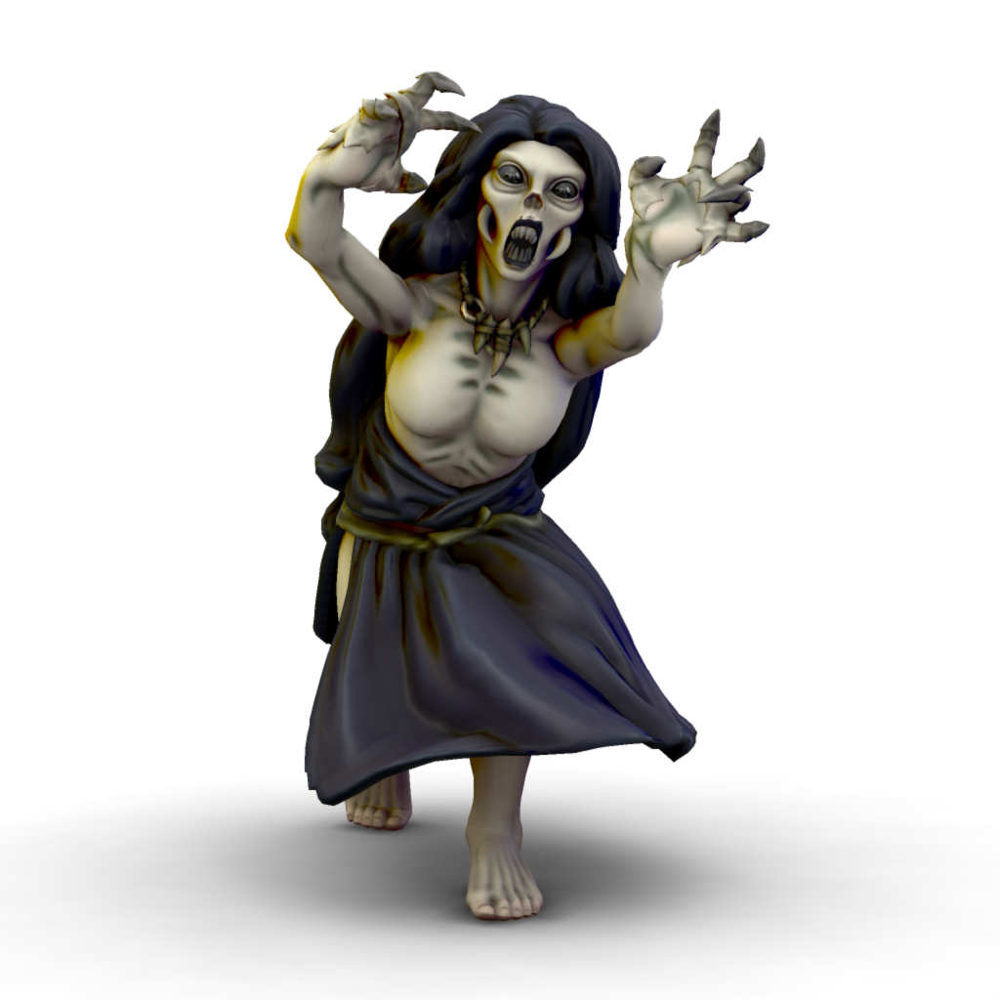

Lilitun

Lilitun are creatures of vengeance and destruction. They are drawn to intense feelings of wrath, often summoned by victims of violence and injustice. Once a lilitun has been drawn to an area, they will usually hunt down the target of the wroth which attracted them, but will rarely stop once they are dead. Many a settlement of innocent villagers has been wiped out because of one person's actions attracting a lilitun.
Physiology
Much like their daemonic mother, lilitun take on the form of a haggared woman in rags. They have pale, cracking skin and burned out eyes. They can run inhumanly fast, lurching after their victims on all fours. Their fingers are disproportionately long, with sharp claws perfect for latching on to a victim. Their mouths are full of sharp teeth which can strip flesh from bone with ease.
🡐 Deigenic species